Computer Science Student. Aspiring Frontend Software Engineer.
Hi! I'm Edward Truong, a Master of Computer Science student passionate about learning software development skills. Currently, I'm building my portfolio and looking for opportunities to grow and contribute to real-world projects.
I have hands-on expereince programming in Python, Java, C, and JavaScript, and I'm always looking to learn new languages. I enjoy building projects from the ground up and especially love to experiment and work on the frontend. Check out some of my projects below!
Python, Flask, SQL, HTML, CSS, JavaScript, SQLite
RestauRate is a web-based application that enables users to generate reviews for restaurants based on the restaurant's name, suburb, city, cuisine, rating, and any comments. Users are also able to view the details of each previous review and pinpoint the location of the restaurant on an interactive map. Administrators can access a dashboard through login, and be able to view analytics and delete user-generated reviews.
This personal project was brought to life from my love of trying new places and foods, as well as my passion for developing new technical skills.
Python, Django, HTML, CSS, JavaScript
FIRE is a web-based application that enables users to calculate their unique timeline of investing to live the FIRE (Financial Independence, Retire Early) lifestyle.
This application was developed as a passion project, combining my interests in full-stack development and personal finance. Through my own financial journey, I discovered that setting measurable goals and celebrating the small wins are essential for maintaining motivation and ensuring consistent progress. Inspired by this experience, I developed this tool to visualise my personal timeline and support others to succeed.
Python, Flask, HTML, CSS, JavsScript
I developed a web-based application that provides real-time weather forecasts for cities world wide. Included live weather graphics and timestamps for an intuitive user experience.
Weather data is retrieved using the OpenWeatherMap API and the location is displayed on an interactive map using the Google Maps API.
Python, PySide6
I developed a fully functional Blackjack game, playable through a Graphical User Interface (GUI) using the Python PySide6 library. Game functionalities include the option for the user to hit, stand, and double down.
This project encouraged me to implement event-driven programming and to optimise the game for a seamless user experience.